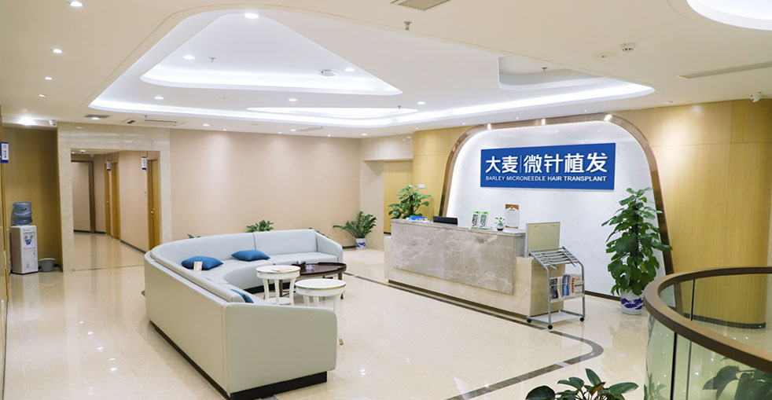

針對所有掉髮階段的先進治療，從早期稀疏到進階禿頭

我們的禿頭修復計劃為Norwood III-VI禿頭提供全面的解決方案。我們結合先進的微針FUE技術與策略性多療程規劃，即使是進階禿頭也能帶來自然、改變人生的效果。我們在複雜案例方面擁有18年以上的經驗，已幫助數千名患者重拾自信和年輕外觀。
結合FUE和FUT用於大面積禿頭覆蓋
改變人生效果的策略性規劃
由主任醫師使用3D分析進行完整的頭皮和供體評估
制定全面的多療程策略以實現您的覆蓋目標
先進的FUE採集最大化毛囊單位品質和數量
遵循自然頭髮角度和最佳化濃度模式的精準切口
使用專利植髮筆進行專業放置以實現最大存活率和生長
可選的後續療程，隨著時間建立濃度和覆蓋
業界領導者，成效卓越
自2006年以來微針植髮技術的先驅與領導者
遍佈中國主要城市，均秉持相同的高標準
創新的微針和植髮筆技術，實現卓越成效
受到全球患者信賴，帶來改變人生的成效
為國際患者在整個治療過程中提供全面英文支援
最先進的設施和嚴格的安全協議，讓您安心
看看我們的患者實現的驚人轉變


與我們滿意患者的珍貴時刻

成功手術後與我們的醫療團隊合影

與我們的醫生一起慶祝出色的成效

另一位滿意的患者分享他們的喜悅

出院前與我們的專家合影

開心的患者與陳醫生治療後合影

興奮的患者展示他們的新外觀
聽聽我們全球滿意患者的心得
"我頭頂完全禿了，嘗試了所有方法！大麥的禿頭修復完全改變了我的外觀！我在Google上看到的推薦真的很對！"
"我的禿頭讓我看起來老了很多！修復後，我看起來和感覺年輕了10歲！從香港過來做的，朋友們都看不出來！"
"我在Google上搜尋了好幾年才找到大麥！禿頭修復改變了我的人生！從澳門過來很方便！"
"我以為我餘生都要戴帽子了！大麥的禿頭修復給了我回頭髮和自信！台灣的朋友可以放心來！"
"我已經放棄再擁有頭髮的希望了！大麥的禿頭修復超出了我所有的期望！從香港過來真的很值得！"
"禿頭正在損害我的自尊！修復後，我覺得像換了個人！從澳門過來做的，太滿意了！"
體驗我們現代舒適的設施

我們最先進的設施

在我們的高級休息室放鬆

無菌且先進

私密且專業

舒適的術後空間

歡迎的入口
找到關於植髮的常見問題解答
聯絡我們進行免費諮詢
15810155700
+86 13730143529
hairtransplant@qq.com